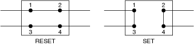
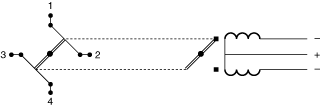
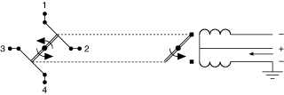
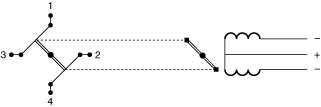
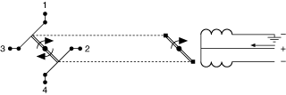

提交有关此主题的反馈。
提交有关此主题的反馈。 访问ni.com/support以获得技术支持。
访问ni.com/support以获得技术支持。RF 转换开关 (DPDT) 是一种电枢继电器，由处于两种状态（复位和设置）之一的四个端口 (1-4) 组成。在复位状态下，端口 1 连接到端口 2，端口 3 连接到端口 4。在设置状态下，端口 1 连接到端口 3，端口 2 连接到端口 4。RF 传输的复位和设置状态开关如下图所示：

下图说明了带 2 线圈锁存的转换开关的操作周期：




提交有关此主题的反馈。 访问ni.com/support以获得技术支持。